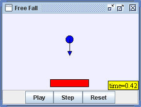

5
Free Fall models a ball that is dropped near the surface of Earth. Newton's second law states that a force F produces an acceleration a that is proportional to the mass m of the falling object.
F = ma .
A freely falling object is acted on by a constant downward gravitational force if we ignore air resistance. Because this gravitational force F is constant and because it is proportional to the mass of the falling object, all objects near Earth fall with the same constant downward acceleration g = 9.8 m/s2. In the Free Fall model, the ball's speed is reduced by a constant factor at every floor collision. All motion takes place in the vertical (y) direction to keep this first Ejs example as simple as possible.
The Free Fall model is a designed to teach Ejs modeling. Right click within the simulation to examine this model in the Ejs modeling and authoring tool. See:
The Easy Java Simulations (EJS) manual can be downloaded from the ComPADRE Open Source Physics collection and from the Ejs website.
This simulation was created by Wolfgang Christian using the Easy Java Simulations (Ejs) modeling tool. You can examine and modify this simulation if you have Ejs installed by right-clicking within a plot and selecting "Open Ejs Model" from the pop-up menu.
Information about Ejs is available at: <http://www.um.es/fem/Ejs/>.